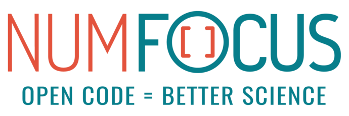

About#
Sgkit is a fiscally sponsored project of NumFOCUS, a nonprofit dedicated to supporting the open-source scientific computing community. If you like sgkit and want to support our mission, please consider making a donation to support our efforts.
NumFOCUS is 501(c)(3) non-profit charity in the United States; as such, donations to NumFOCUS are tax-deductible as allowed by law. As with any donation, you should consult with your personal tax adviser or the IRS about your particular tax situation.